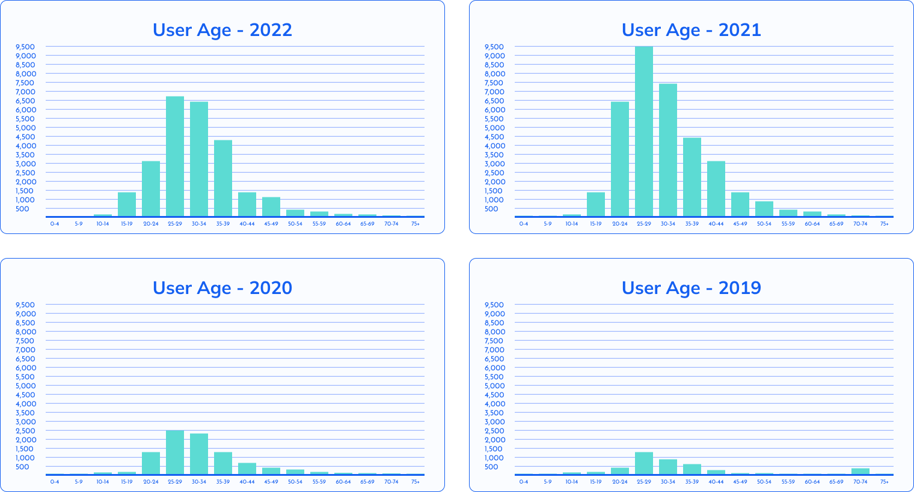
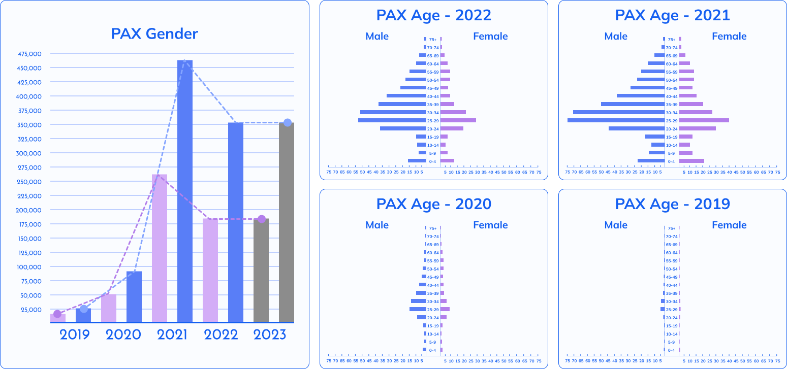
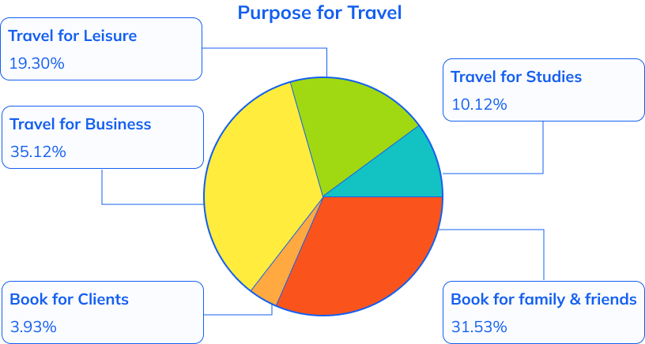
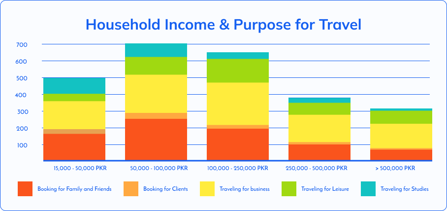
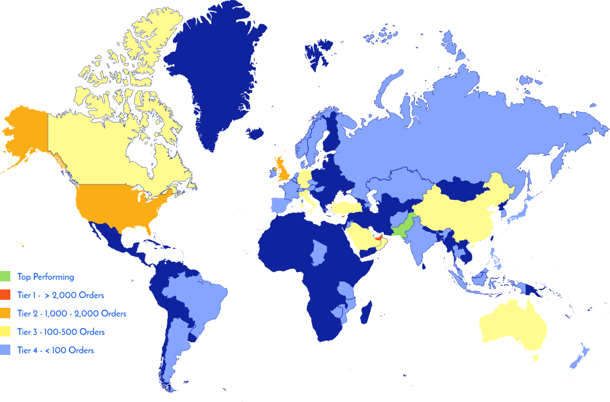
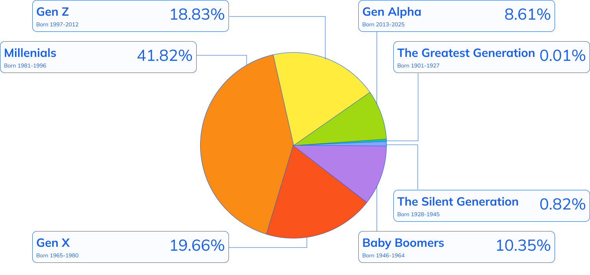

Market Segments Research
Research to Guide Product Strategy
Market Segmentation · Quantitative Research · Survey Design · Data Analysis · Personas · Product Strategy
Company:
Sastaticket
Role:
UX Researcher
Year:
2022
Team:
Muiz Sani (Data Scientist) Aleena Hassan (Service Designer)
Sastaticket needed a clear picture of its customers to guide product strategy and prioritise features.
I worked with a data scientist and a service designer to discover trends in booking.
We began by defining eight segmentation criteria:

Demographic Segments
Classifies users using customer demographic data

Geographic Segments
Classifies users based on where they are located.

Generational Segments
Classifies users based on their generational group.

Life Stage Segments
Classifies users based on what stage they are in their lives.

Psychographic Segments
Classifies users based on their lifestyle, personality, opinions, and interests.

Behavioral Segments
Classifies users based on their decision-making patterns.

Seasonal Segments
Classifies users based on when they buy i.e. Holidays and events

Value Segments
Classifies users based on how much revenue/GMV they bring in.
Analysing 4 years of booking data revealed:
Millenials accounted for 42% of booking.
Users are primarily aged between 20-44 and the bulk of users were 25-29.
Flight passengers also frequently travelled with dependents.
Younger users were often making secondary bookings for older passengers.

Users arrange by age and no. of bookings

Passengers data arranged by gender and age
Purpose of travel


The top purpose of travel is business in all income brackets.
In higher income brackets we find less people booking for family and friends.
Traveling for leisure peaks and declines after the 100,000 PKR income mark.
Fewer people booking for clients.
Geographic Segments
98.49 % of customers are from Pakistan. Based on frequency of orders we can divide international market into 4 tiers

| Tier 1 | UAE, Cyprus |
| Tier 2 | Britain, USA |
| Tier 3 | Turkey, Saudi Arabia, China, Australia, Canada, Germany, Italy, Oman |
| Tier 4 | Japan, Sweden, Bahrain, Philippines,Singapore, South Korea, Norway, Malaysia, Afghanistan, Spain, Indonesia, France, Netherlands, Hong Kong, Zimbabwe, Switzerland, Kuwait, Tanzania, Mauritius, India, Qatar, Ireland, Mozambique, Azerbaijan, Czech Republic, Thailand, Belgium, Russia, Austria, Argentina, Brazil, Portugal, Chad, New Zealand, Denmark, Jordan, Kazakistan, Hungary |
Generational Segments
Millenials accounted for 42% of booking.
